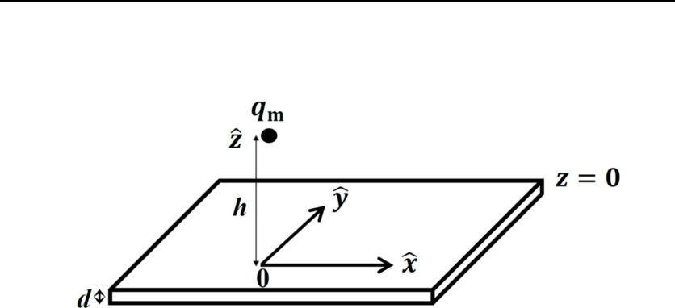
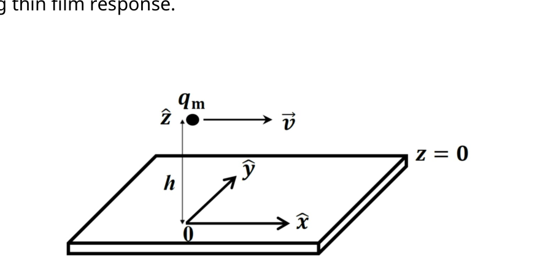
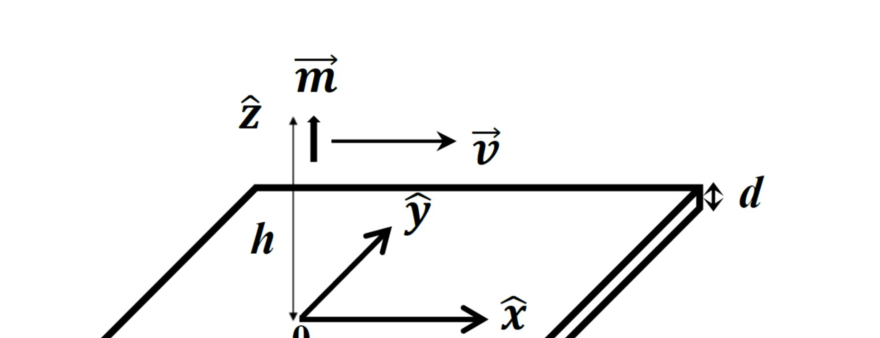

Magnetic Levitation
Useful Information
(1) Directional derivative of a spatial function , given by , has
where denotes a partial derivative of with respect to while keeping and unchanged.
(2) Integral:
Introduction
We intend to study the motion of a small magnetic dipole in the vicinity of a conducting thin film. In the problem text, the terms dipole and monopole are to be regarded, respectively, as synonymous with magnetic dipole and magnetic monopole.
A dipole consisting of a spherical permanent magnet with a uniform magnetization (magnetic dipole moment per unit volume) and a uniform mass density may be treated as a point-like object when its radius is small. Such a dipole representation is good for describing the magnetic field that the dipole produces everywhere outside of its sphere. The representation is also a good approximation for the force acting on the dipole from an applied magnetic field, whenever distances of field sources from the dipole are much larger than .
A point-like dipole can be considered as a pair of monopoles carrying negative and positive magnetic charges and respectively. The pair has a vanishingly small separation, but possesses a finite magnetic dipole moment . Here is the displacement vector from the south monopole () to the north monopole (). The position of the point-like dipole is chosen to be that of the north monopole.
The magnetic field from a monopole is assumed to have a Coulombic form, given by
\vec{B}_{mp} = \frac{\mu_0 q_m}{4\pi r^2}\,\hat{r}, \tag{1}
where is the displacement vector from to the observation point (or field point), is the unit vector , and is the free-space permeability. The force exerted by an applied magnetic field on is given by . It follows, from extending the concept of the monopole field just described in Eq.(1), that the magnetic field from a point-dipole is derivable from a scalar potential , given by the form . The scalar potential is also called the magnetic potential.
The conducting thin film is uniform with thickness in the direction (Fig. 1). It extends horizontally in and directions to infinity and its upper surface is located at a distance from either a point monopole or a dipole. We consider only the case . This allows us to take the electric current density induced in the film to be independent of . We also assume that the displacement current effect to be negligible.

Fig.1 A monopole appears at a distance from a conducting thin film of thickness . The origin of the coordinates is located on the upper surface.The problem is divided into three parts. In Part A, the system consists of a monopole and a thin film, while in Parts B and C, a moving dipole and a thin film.
We choose the plane to coincide with the upper surface of the thin film. The vector denotes the in-plane position vector.
Part A. Sudden appearance of a magnetic monopole: initial response and subsequent time evolution of the response in the thin film (3.0 points)
We first focus on the initial response of the conducting thin film when at time a north monopole appears suddenly at the position (), as is shown in Fig. 1. The monopole remains stationary in all later times ().
Our interest here is the initial total magnetic field in regions and , and the induced electric current density in the thin film. The total magnetic field , where magnetic fields and are, respectively, due to the monopole and the induced current in the thin film. The initial we refer to is at the time , which falls within the interval . Here is a time constant characterizing the subsequent response of the thin film, and is the speed of light in vacuum. In this problem, we take the limit and hence let .
The calculation of the initial total magnetic field (at ) is facilitated by introducing an image monopole. For in the region , the image monopole has a magnetic charge and is located at . On the other hand, for in the region , the image monopole has a magnetic charge and is located at .
Initial response
A.1 Obtain the initial total magnetic field in at . (0.4pt)
A.2 Obtain the initial total magnetic field in at . (0.2pt)
A.3 Find the initial magnetic flux through surfaces at , and at . (0.4pt)
A.4 Obtain the initial induced electric current density in the conducting thin film at . (0.6pt)
For , the total magnetic field becomes , by superposition, with due to the induced electric current in the thin film. You are required below to obtain an equation for near the thin film surface. The time-evolution behavior of would reveal a moving image-monopole picture for the description of the field near in .
The equation for inside the thin film is given below,
\frac{\partial^2 B'_z(\rho, z; t)}{\partial z^2} = \mu_0\sigma\frac{\partial B'_z(\rho, z; t)}{\partial t}. \tag{2}
This equation has been obtained from imposing inside the thin film the Maxwell equation and the Ohmic behavior of the conducting thin film (, where is the electrical conductivity) while neglecting the displacement-current effect. Term being neglected on the left-hand side of Eq.(2) is , based on the condition.
Subsequent response
A.5 Obtain from Eq. (2) an equation of near . The equation contains first partial derivatives of with respect to , and, separately, to . (0.6pt)
A.6 Solve for the general form of near in . (0.4pt)
A.7 Show that your solution in A.6 reveals a moving image-monopole picture for the magnetic field , with a downwardly moving velocity. Find the speed of the image monopole in terms of known parameters from the problem text. (0.4pt)
Part B. Magnetic force acting on a point-like dipole moving with a constant velocity and at a constant h (4.0 points)
The moving image-monopole concept developed in A.7 for near can be assumed to hold also for the field in the region. This assumption is good as long as the time evolution is sufficiently slow in the conducting thin film response.

Fig. 2 A monopole moves with a constant velocity and a constant height from the conducting thin film. As shown are its coordinates at .A monopole (Fig. 2) is caused to move in a constant velocity , with , and a constant height, at , motion up to the present moment (). Its present coordinates are . Our focus is on the magnetic potential due to all image monopoles generated by this moving monopole along its trajectory.
By splitting ‘s trajectory into discrete time steps (a very small time step ), we replace the motion of the by a hopping at the beginning moment of each time step. The hopping is represented by a simultaneous removal and creation of the monopoles. The position of the created monopole coincides with a point on its trajectory right at the beginning moment of this time step. Thus the position of the removed monopole coincides with its trajectory position at the beginning moment of the previous time step. This is achieved by a simultaneous sudden appearance of two magnetic monopoles: and at, respectively, the trajectory positions corresponding to the beginning moments of this and the previous time step. The two positions are separated by a hopping distance . This time-step approach facilitates the determination of all the image magnetic monopoles, and their positions, that are generated in all the time steps.
A moving monopole
B.1 Write down the present () positions of all the image monopoles of the types and . The beginning moments of the time steps are at , where . (0.8pt)
B.2 Find the summation form of the magnetic potential at from all the image monopoles in B.1. Calculate . (0.7pt)

Fig. 3 A dipole with an upward-pointing magnetic dipole moment moves with a constant and a constant height from the conducting thin film. As shown are its coordinates at .Now consider a point-like moving magnetic dipole as shown in Fig. 3. The dipole, with a dipole moment , is caused to move in a constant velocity , and a constant height () motion up to the present moment (), where its present coordinates are at . The point-like dipole can be represented by two slightly displaced monopoles as has been mentioned in the Introduction section. The location of the magnetic dipole is chosen to be that of the north monopole, and is assumed kept fixed.
A moving dipole
B.3 Find the force acting upon the point-like magnetic dipole by the conducting thin film at . (1.5pt)
Relation between and
For the numerical evaluation in this Part below, we consider a conducting thin film that is made of copper, such that , , and .
B.4 Calculate the value of , the speed of the image dipole as according to A.7. (0.3pt)
It is known that the penetration depth (called skin depth), which distance an electromagnetic wave can penetrate into a conducting slab, depends on the angular frequency of the wave. The dependence is given by
\delta = \sqrt{\frac{2}{\omega\mu_0\sigma}}. \tag{3}
For the consideration below, we take , where equals the larger velocity of and .
B.5 Obtain the dependence of in both the small and the large regimes. (0.4pt)
B.6 Obtain the critical velocity at which the two regimes in B.5 meet. (0.3pt)
Part C. Motion of the magnetic dipole when the conducting thin film is superconducting (3.0 points)
The consideration above can be applied to the case of type-I superconductors, where magnetic fields are completely repelled from the superconductors (the Meissner effect) at all times, by taking the limit that electrical conductivity .
Here we consider a point-like magnetic dipole with a horizontal magnetic dipole moment , a mass , and located at . We focus on vertical motions of the magnetic dipole under the action of a gravitational field, with gravitational acceleration . Weak coupling between the given dipole orientation and its center-of-mass motion is assumed and is neglected. As such, we fix the magnetic dipole moment, as is given above, for our considerations below. In addition, we assume an ultra-high vacuum environment so that no damping to the motion from the residual air needs to be considered.
C.1 Find the equilibrium distance of the dipole from the superconducting thin film. (1.2pt)
C.2 Find the dipole angular frequency of oscillations about the equilibrium. (0.8pt)
Physical parameters for a spherical permanent magnet are as follows: radius , mass density , , , and magnetization .
C.3 Calculate the value of . (0.7pt)
C.4 Calculate the value of . (0.3pt)
Fonte: Testo (PDF) — p.1
Topic: Magnetism, Electromagnetism, Oscillations & Waves Metodi: Differential Equations, Faraday’s Law of Induction, Calculus-Integration, Simple Harmonic Motion Analysis Competenze: Mathematical Modeling, Physical Reasoning Objects: Magnetic Dipole, Magnet
Levitamento magneto
Informazioni utili
(1) La derivata direzionale di una funzione spaziale , data da , ha
in cui indica una derivata parziale di rispetto a mantenendo invariati e .
(2) Integral:
Introduzione
Intendiamo studiare il movimento di un piccolo dipolo magnetico nelle vicinanze di un film sottile conduttore. Nel testo del problema, i termini dipole e monopole devono essere considerati, rispettivamente, come sinonimi di dipole magnetico e di monopole magnetico.
Un dipolo costituito da un magnete permanente sferevole con una magnetizzazione uniforme (momento di dipolo magnetico per unità di volume) e una densità di massa uniforme può essere trattato come un oggetto puntuale quando il suo raggio è piccolo. Una simile rappresentazione dipolo è utile per descrivere il campo magnetico che il dipolo produce ovunque al di fuori della sua sfera. La rappresentazione rappresenta anche una buona approssimazione della forza che agisce sul dipolo da un campo magnetico applicato, quando le distanze delle fonti di campo dal dipolo sono molto più grandi di .
Un dipolo a punto può essere considerato come una coppia di monopoli che trasportano rispettivamente cariche magnetiche negative e positive e . La coppia ha una separazione scarsamente piccola, ma possiede un momento di dipolo magnetico finito . Qui è il vettore di spostamento dal monopolio meridionale () al monopolio nord (). La posizione del dipolo punto-simile è scelto per essere quello del monopolio nord.
Il campo magnetico di un monopole si presume abbia una forma coulombica, data da
\vec{B}_{mp} = \frac{\mu_0 q_m}{4\pi r^2}\,\hat{r}, \tag{1}
se è il vettore di spostamento da al punto di osservazione (o punto di campo), è il vettore unitario e è la permeabilità nello spazio libero. La forza esercitata da un campo magnetico applicato su è data da . Dall’estensione del concetto di campo monopolistico appena descritto in Eq.(1), si deduce che il campo magnetico da un punto diopo è derivabile da un potenziale scalare , dato dalla forma . Il potenziale scalare è anche chiamato potenziale magnetico.
Il film sottile conduttore è uniforme con spessore nella direzione (Fig. 1). Si estende orizzontalmente nelle direzioni e fino all’infinito e la sua superficie superiore si trova a una distanza da un monopolio di punto o da un dipolo. Si tratta solo del caso . Questo ci permette di prendere la densità di corrente elettrica indotta nel film per essere indipendente da . Supponiamo anche che l’effetto della corrente di spostamento sia trascurabile.
Fig.1 Un monopole appare a una distanza da un sottile film di spessore . L’origine delle coordinate si trova sulla superficie superiore.
Il problema è diviso in tre parti. Nella parte A, il sistema è costituito da un monopolio e da un film sottile, mentre nelle parti B e C, da un dipolo in movimento e da un film sottile.
Scegliamo il piano per coincidere con la superficie superiore del film sottile. Il vettore indica il vettore di posizione in piano.
Parte A. Aparizione improvvisa di un monopolio magnetico: risposta iniziale e successiva evoluzione temporale della risposta nel film sottile (3.0 punti)
Si concentra innanzitutto sulla risposta iniziale del film sottile conduttore quando al tempo un monopolio nord appare improvvisamente alla posizione (), come mostrato nella figura. 1. Il monopolio rimane stazionario in tutti i tempi successivi ().
Il nostro interesse è il campo magnetico totale iniziale nelle regioni e , e la densità di corrente elettrica indotta nel film sottile. Il campo magnetico totale , dove i campi magnetici e sono, rispettivamente, dovuti al monopolio e alla corrente indotta nel film sottile. L’iniziale a cui ci riferisce è il tempo , che rientra nell’intervallo . Qui è una costante temporale che caratterizza la risposta successiva del film sottile, e è la velocità della luce nel vuoto. In questo problema, prendiamo il limite e quindi lasciamo .
Il calcolo del campo magnetico totale iniziale (a ) è facilitato mediante l’introduzione di un monopolio di immagine. Per nella regione , il monopolio di immagine ha una carica magnetica e si trova a . D’altra parte, per nella regione , il monopolio di immagine ha una carica magnetica e si trova a .
Resposizione iniziale
**A.1 ** Ottieni il campo magnetico totale iniziale in a . (0.4pt)
A.2 Ottieni il campo magnetico totale iniziale in a . (0.2pt)
A.3 Trova il flusso magnetico iniziale attraverso le superfici a e a . (0.4pt)
**A.4 ** Ottieni la densità iniziale di corrente elettrica indotta nel film sottile conduttore a . (0.6pt)
Per , il campo magnetico totale diventa , per superposizione, con a causa della corrente elettrica indotta nel film sottile. Si richiede di ottenere un’equazione per vicino alla superficie del film sottile . Il comportamento di evoluzione temporale di rivelerebbe un’immagine in movimento monopole per la descrizione del campo vicino a in .
L’equazione per all’interno del film sottile è riportata di seguito,
\frac{\partial^2 B'_z(\rho, z; t)}{\partial z^2} = \mu_0\sigma\frac{\partial B'_z(\rho, z; t)}{\partial t}. \tag{2}
Questa equazione è stata ottenuta imponendo all’interno del film sottile l’equazione di Maxwell e il comportamento Ohmico del film sottile conduttore (, dove è la conducibilità elettrica) trascurando l’effetto di spostamento-corente. Il termine trascurato sul lato sinistro di Eq.(2) è , basato sulla condizione .
Resposizione successiva
**A.5 ** Ottenere da Eq. (2) un’equazione di vicino a . L’equazione contiene le prime derivate parziali di rispetto a e, separatamente, a . (0.6pt)
A.6 Risolvi la forma generale di vicino a in . (0.4pt)
A.7 Mostra che la soluzione in A.6 rivela un’immagine in movimento monopole per il campo magnetico , con una velocità in movimento verso il basso. Trova la velocità del monopolio di immagine in termini di parametri noti dal testo del problema. (0.4pt)
Parte B. Forza magnetica che agisce su un dipolo a forma di punto in movimento a velocità costante e a una costante h (4,0 punti)
Il concetto di monopolio di immagine in movimento sviluppato in A.7 per vicino a può essere presunto per il campo nella regione . Questa ipotesi è buona finché l’evoluzione temporale è sufficientemente lenta nella risposta del film sottile conduttore.
Fig. 2 Un monopole si muove con una velocità costante e con un’altezza costante dal film sottile conduttore. Come mostrato, le sue coordinate sono .
Un monopolio (Fig. 2) si fa muovere a velocità costante , con , e a altezza costante, a , fino al momento presente (). Le sue attuali coordinate sono . La nostra attenzione è sul potenziale magnetico dovuto a tutti i monopoli di immagine generati da questo monopole in movimento lungo la sua traiettoria.
Dividendo la traiettoria di in passi temporali discreti (un piccolo passo temporale ), sostituisco il movimento del con un salto al momento iniziale di ogni passo temporale. Il salto è rappresentato dalla rimozione e dalla creazione simultanei dei monopoli. La posizione del monopolio creato coincide con un punto della sua traiettoria proprio all’inizio di questo passo temporale. La posizione del monopolio rimosso coincide quindi con la sua posizione di traiettoria al momento iniziale del passaggio temporale precedente. Ciò è ottenuto mediante l’apparizione simultanea improvvisa di due monopoli magnetici: e rispettivamente alle posizioni di traiettoria corrispondenti ai momenti di inizio di questo e del passaggio temporale precedente. Le due posizioni sono separate da una distanza di salto . Questo approccio a tempo facilita la determinazione di tutti i monopoli magnetici dell’immagine e delle loro posizioni, che vengono generati in tutti i passi temporali.
Un monopolio mobile
B.1 Scrivi le posizioni presenti () di tutti i monopoli di immagini dei tipi e . I momenti di inizio dei passaggi temporali sono , dove . (0.8pt)
B.2 Trova la forma di somma del potenziale magnetico a da tutti i monopoli di immagine di B.1. Calcolare . (0.7pt)
Fig. 3 Un dipolo con un momento di dipolo magnetico ** puntato verso l’alto ** si muove con una costante e una costante altezza dal film sottile conduttore. Come mostrato, le sue coordinate sono .
Ora consideriamo un dipolo magnetico in movimento simile a un punto come mostrato nella figura. 3. Il dipolo, con un momento dipolo , si muove a velocità costante , e a altezza costante () fino al momento presente (), dove le sue coordinate attuali sono a . Il dipolo a punto può essere rappresentato da due monopoli leggermente spostati come è stato menzionato nella sezione Introduzione. La posizione del dipolo magnetico è scelta per essere quella del monopolio nord, e è presumita mantenuta fissa.
Un dipolo in movimento
B.3 Trova la forza che agisce sul dipolo magnetico a forma di punto con il film sottile conduttore a . (1.5pt)
Relazione tra e
Per la valutazione numerico di questa parte di seguito, consideriamo un film tenuto conduttore che è fatto di rame, come , e .
B.4 Calcolare il valore di , la velocità del dipolo dell’immagine secondo A.7. (0.3pt)
È noto che la profondità di penetrazione (denominata profondità della pelle), che è la distanza che un’onda elettromagnetica può penetrare in una lastra conduttrice, dipende dalla frequenza angolare dell’onda. La dipendenza è data da
\delta = \sqrt{\frac{2}{\omega\mu_0\sigma}}. \tag{3}
Per la considerazione di seguito, prendiamo , dove è uguale alla velocità più grande di e .
**B.5 ** Ottieni la dipendenza di sia nei regimi piccoli che grandi. (0.4pt)
B.6 Ottieni la velocità critica alla quale i due regimi di B.5 si incontrano. (0.3pt)
Parte C. Movimento del dipolo magnetico quando il film sottile conduttore è superconduttore (3,0 punti)
La considerazione di cui sopra può essere applicata al caso dei superconduttori di tipo I, in cui i campi magnetici sono completamente respinti dai superconduttori (effetto Meissner) in ogni momento, prendendo il limite di quella conducibilità elettrica .
Qui consideriamo un dipolo magnetico a punto con un momento di dipolo magnetico ** orizzontale ** , una massa , e situato a . Ci concentriamo sui movimenti verticali del dipolo magnetico sotto l’azione di un campo gravitazionale, con accelerazione gravitazionale . Si assume un debole accoppiamento tra l’orientamento di un dato dipolo e il suo movimento al centro della massa e viene trascurato. Come tale, fissamo il momento di dipolo magnetico, come è dato sopra, per le nostre considerazioni di seguito. Inoltre, presumiamo un ambiente a vuoto ultra-alto in modo che non occorra considerare l’ammortizzazione del movimento dell’aria residua.
**C.1 ** Trova la distanza di equilibrio del dipolo dal film sottile superconduttore. (1.2pt)
**C.2 ** Trova la frequenza angolare di dipole delle oscillazioni intorno all’equilibrio. (0.8pt)
I parametri fisici per un magnete permanente sferevole sono i seguenti: raggio , densità di massa , , e magnetizzazione .
**C.3 ** Calcolare il valore di . (0.7pt)
**C.4 ** Calcolare il valore di . (0.3pt)
Fonte: Testo (PDF) — p.1
Topic: Magnetism, Electromagnetism, Oscillations & Waves Metodi: Differential Equations, Faraday’s Law of Induction, Calculus-Integration, Simple Harmonic Motion Analysis Competenze: Mathematical Modeling, Physical Reasoning Objects: Magnetic Dipole, Magnet